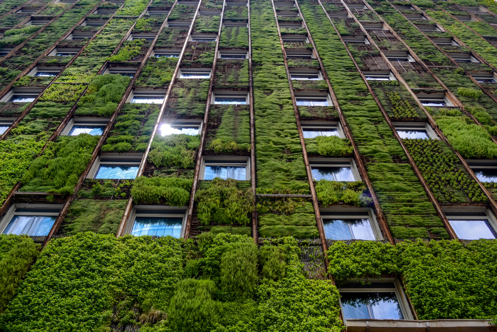

Transformez votre espace de vie en un havre de bien-être avec des solutions écologiques et durables. Les murs végétaux, alliant esthétisme et performance, offrent une isolation thermique et phonique optimale, tout en purifiant l'air et en favorisant la biodiversité. Optez pour un habitat où confort, nature et respect de l'environnement se rencontrent, pour un avenir plus vert et serein.
